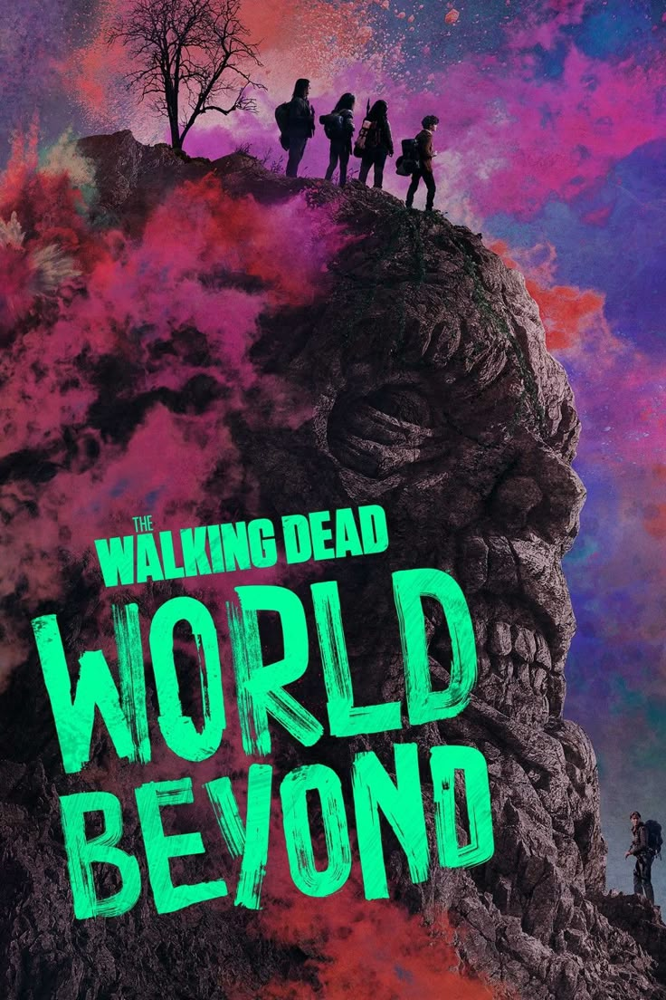
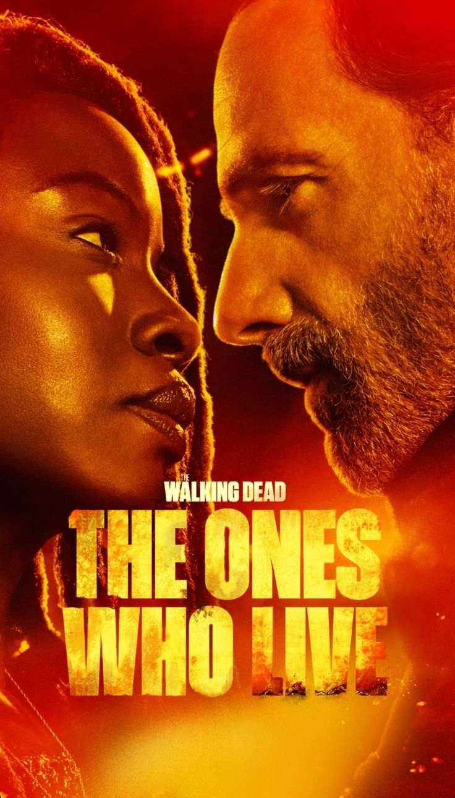
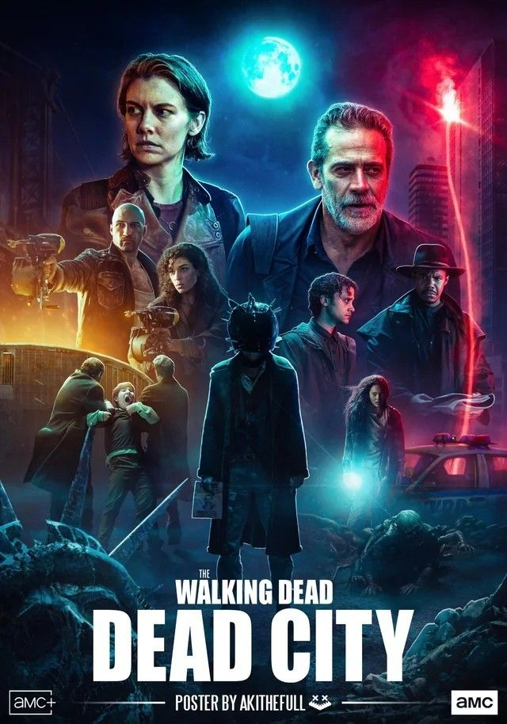

{kind=link}
EN ESTA ÁREA ENCONTRARÁS UNA LISTA DE SERIES SIMILARES....
-
The Walking Dead: World Beyond
 PRESIONA LA IMAGEN PARA SABER MAS
DEFINICIÓN:
WORLD BEYOND es el último spin-off de la franquicia The Walking Dead, que también incluye Fear the Walking Dead, además de la serie principal. Se desarrolla diez años después del inicio del brote y presenta una nueva comunidad de supervivientes en Omaha, Nebraska..
-
The Walking Dead: The Ones Who Live
 PRESIONA LA IMAGEN PARA SABER MAS
DEFINICIÓN:
The Walking Dead: The Ones Who Live es una serie de televisión estadounidense postapocalíptica creada por Scott M. Gimple, Danai Gurira y Andrew Lincoln para AMC.1 Está ambientada tras la conclusión de la serie original The Walking Dead, con Lincoln, Gurira y Pollyanna McIntosh retomando sus papeles. Es la sexta serie derivada o spin-off y la séptima serie de la franquicia de The Walking Dead. The Ones Who Live se estrenó el 25 de febrero de 2024 en AMC y AMC+ para Estados Unidos.
-
the walking dead dead city
 PRESIONA LA IMAGEN PARA SABER MAS
DEFINICIÓN:
The Walking Dead: Dead City es una serie de televisión de horror postapocalíptico creada por Eli Jorné, basada en los personajes Maggie y Negan de The Walking Dead. Es la cuarta serie derivada o spin-off y la quinta de las siete series actuales y previstas de la franquicia de The Walking Dead, siguiendo a Fear the Walking Dead, The Walking Dead: World Beyond y Tales of the Walking Dead, aunque es la primera serie directamente derivada de la serie original.